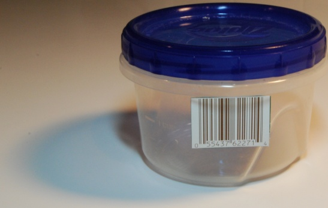

.NET Generics: more than just containers
This talk was first presented for the Dallas .NET Users Group on November 8, 2007. All of the resources are available for download.
slides
code
audio
tuples

Home
What are generics?
Generic class syntax
Generic method syntax
Constraints
The strategy pattern
The policy pattern
Generic algorithms
Composite algorithms
Factory methods
Conclusion